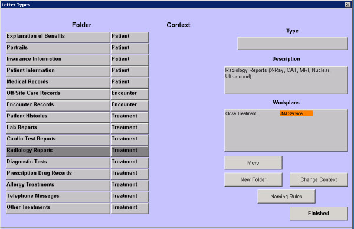

|
Description
This screen lists the folders used to store documents either scanned or imported into the patient's chart. In addition to providing a method of organization for these documents, folders can have workplans attached to them. If a document is added to a folder that has a workplan, that workplan is dispatched automatically. This is especially useful in situation like lab reports. The practice can set up a workplan for the Lab Reports folder so that the provider who ordered the lab is sent a Task to review the results after they are scanned and posted.
Attachment Naming Conventions
In version 5 you have more control over the naming of your attachments. This is determined by the folder into which the item is being scanned or imported. You can choose one of the following options for each folder:
- Name supplied by external source - use the filename from the item you are importing.
- Folder Name - use the folder name, for example all items in the EOB folder would be named EOB (with the date imported noted).
- Other - user-supplied name for all items in the folder, for example all items in the Explanation of Benefits folder could be named EOB.
- Prompt user even if external source supplied name - If the first option, Name supplied by external source, is selected, the folder configuration can specify whether or not to also prompt the user to enter a name for the item.
Modifying the Folder List
Users must have special permissions to be able to add, modify or delete folders from the list. It is important that you do not delete a folder that might have been used to save any documents. The documents will still be saved in the database, but will not be accessible from the Patient Chart screen.
How to Access This Screen
Access this screen by selecting Folders from the Configuration List.
Screen Example

Want to Learn More?
Related Solutions
How to: Add a Workplan to a Folder
How to: Scan and Post Directly to a Patient's Chart
|